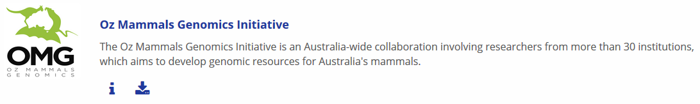
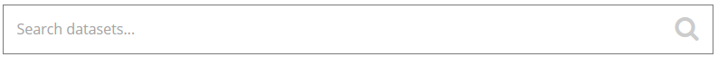
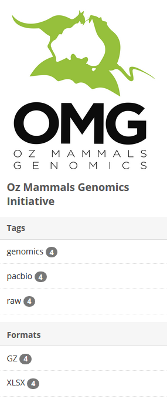

Find, filter and download Framework Initiative data
Home How to register for an account and log-in How to find, filter and bulk download data and meta-data Programmatic access to the Bioplatforms Data Portal How to filter Australian Microbiome data
Context
This guide is intended to capture download to a desktop workstation. Please note, the download.sh file described in step 12 below can be used for direct download of portal data to a high performance computing (HPC) environment.
Instructions
- Go to the Data portal page
- Log-in using your username and password (created during registration)
- Login is required for full functionality including access to datasets
- Select the banner or text link for the Framework Initiative of interest: e.g. Oz Mammals Genomics

- Use the
Search datasets…field textbox to search for the data you want (e.g. PacBio Dunnart)

- To narrow search results further, use the Tags in the left column, which will filter the data (see image below)

- When you have the files you want on the search page, click bulk download

- This will generate a zip folder with the files you need to download the data
- Download and decompress this folder
- Inside there are the following files and folders:
package_metadata/resource_metadata/tmp/download.ps1download.shREADME.txt
README.txtprovides instructions for data download: PLEASE READ THIS!package_metadatacontains a spreadsheet file with the metadata relevant to the downloaded filtered data setresource_metadacontains a spreadsheet file with the metadata relevant to the files which comprise the filtered data set- The
tmp/folder contains:
*_md5sum.txt, where the * indicates the name of the downloaded data package*_urls.txt, where the * indicates the urls for each data set in the downloaded package
download.ps1anddownload.share shell scripts
download.ps1: Windows PowerShell script (see below), which when executed will download the files, and then checksum them. This is supported on a Microsoft system, and uses only PowerShell.
#!/usr/bin/env pwsh
$apikey = $Env:CKAN_API_KEY
if (!$apikey) {
'Please set the CKAN_API_KEY environment variable.'
''
'You can find your API Key by browsing to:'
'https://data.bioplatforms.com//user/[USERNAME]'
''
'The API key has the format:'
'xxxxxxxx-xxxx-xxxx-xxxx-xxxxxxxxxxxx'
''
'To set the environment variable in Linux/MacOS/Unix, use:'
'export CKAN_API_KEY=xxxxxxxx-xxxx-xxxx-xxxx-xxxxxxxxxxxx'
''
'On Microsoft Windows, within Powershell, use:'
'$env:CKAN_API_KEY=xxxxxxxx-xxxx-xxxx-xxxx-xxxxxxxxxxxx'
exit 1
}
#
# This PowerShell script was automatically generated.
#
function DownloadURL($url)
{
$filename = $url.Substring($url.lastIndexOf('/') + 1)
if (Test-Path $filename) {
"File already exists, skipping download: " + $filename
return
}
$client = new-object System.Net.WebClient
if ($apikey) {
$client.Headers.Add('Authorization: ' + $apikey)
}
"Downloading: " + $filename
$client.DownloadFile($url, $filename)
}
function VerifyMD5([String]$filename, [String]$expected_md5)
{
$md5hash = new-object -TypeName System.Security.Cryptography.MD5CryptoServiceProvider
try {
$actual_md5 = [System.BitConverter]::ToString($md5hash.ComputeHash([System.IO.File]::ReadAllBytes($filename))).Replace('-', '').toLower();
} catch [System.IO.FileNotFoundException] {
$filename + ": FAILED open or read"
return
}
if ($actual_md5 -eq $expected_md5) {
$filename + ": OK"
} else {
$filename + ": FAILED"
}
}
'Commencing bulk download of data from CKAN:'
''
$urls = Get-Content 'tmp/[DATA PACKAGE NAME]_urls.txt'
ForEach ($line in $urls) {
DownloadURL $line
}
'File downloads complete.'
''
'Verifying file checksums:'
''
$md5s = Get-Content 'tmp/[DATA PACKAGE NAME]_md5sum.txt'
ForEach ($line in $md5s) {
$md5, $filename = $line.Split(" ",[StringSplitOptions]'RemoveEmptyEntries')
VerifyMD5 $filename $md5
}download.sh: UNIX shell script (see below), which when executed will download the files, and then checksum them. This is supported on any Linux or MacOS/BSD system, so long ascurlis installed.
#!/bin/sh
#
# This UNIX shell script was automatically generated.
#
if [ x"$CKAN_API_KEY" = "x" ]; then
echo "Please set the CKAN_API_KEY environment variable."
echo
echo "You can find your API Key by browsing to:"
echo "https://data.bioplatforms.com//user/[USERNAME]"
echo
echo "The API key has the format:"
echo "xxxxxxxx-xxxx-xxxx-xxxx-xxxxxxxxxxxx"
echo
echo "To set the environment variable in Linux/MacOS/Unix, use:"
echo "export CKAN_API_KEY=xxxxxxxx-xxxx-xxxx-xxxx-xxxxxxxxxxxx"
echo ""
exit 1
fi
if ! which curl >/dev/null 2>&1; then
echo "`curl` is not installed. Please install it."
echo
echo "On MacOS, it can be installed via HomeBrew (https://brew.sh/)"
echo "using the command `brew install curl`"
exit 1
fi
if ! which md5sum >/dev/null 2>&1; then
echo "`md5sum` is not installed. Please install it."
echo
echo "On MacOS, it can be installed via HomeBrew (https://brew.sh/)"
echo "using the command `brew install md5sha1sum`"
exit 1
fi
echo "Downloading data"
while read URL; do
echo "Downloading: $URL"
curl -O -L -C - -H "Authorization: $CKAN_API_KEY" "$URL"
done < tmp/[DATA PACKAGE NAME]_urls.txt
echo "Data download complete. Verifying checksums:"
md5sum -c tmp/[DATA PACKAGE NAME]_md5sum.txt 2>&1 | tee tmp/md5sum.log- When you run
download.shordownload.ps1, it will provide instructions to set up your API key - Set up API key
- Run
downloads.shordownloads.ps1again - The data should now download and checksum
Common Issues and Problems
download.sh - MD5 sums do not validate correctly and files are not correct size
- Check that you are running a recent version of curl. The Bioplatforms Data Portal requires version 7.58 or later (due to a bug fix with the Authorization header). Run
curl --versionto check. - Check that your PATH contains the correct version of curl. Run
which curlto check.